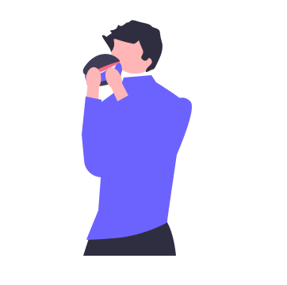

<ion-content>
  <ion-fab horizontal="end" vertical="bottom" slot="fixed" (click)="cerrarSesion()">
    <ion-fab-button color="warning">
      <ion-icon name="log-out-outline"></ion-icon>
    </ion-fab-button>
  </ion-fab>

  <h1>MENU DE ALTAS</h1>
  <ion-fab horizontal="start" vertical="bottom" slot="fixed">
    <a routerLink="/home-supervisor">
      <ion-fab-button color="warning">
        <ion-icon style="font-size: 3rem" name="arrow-undo-outline"></ion-icon>
      </ion-fab-button>
    </a>
  </ion-fab>
  <div class="container">
    <ion-card routerLink="/alta-supervisor">
      <ion-card-header>
        <ion-card-title>Alta Dueño / Supervisor</ion-card-title>
      </ion-card-header>
      <ion-card-content>
        
      </ion-card-content>
    </ion-card>

    <ion-card routerLink="/register-empleado">
      <ion-card-header>
        <ion-card-title>Alta Empleado</ion-card-title>
      </ion-card-header>
      <ion-card-content>
        
      </ion-card-content>
    </ion-card>

    <ion-card *ngIf="authService.UsuarioActivo.value.perfil!= 'supervisor' && authService.UsuarioActivo.value.perfil != 'dueño'"
      routerLink="/alta-cliente">
      <ion-card-header>
        <ion-card-title>Alta Cliente</ion-card-title>
      </ion-card-header>
      <ion-card-content>
        
      </ion-card-content>
    </ion-card>

    <ion-card routerLink="/register-mesa">
      <ion-card-header>
        <ion-card-title>Alta Mesa</ion-card-title>
      </ion-card-header>
      <ion-card-content>
        
      </ion-card-content>
    </ion-card>
  </div>
</ion-content>